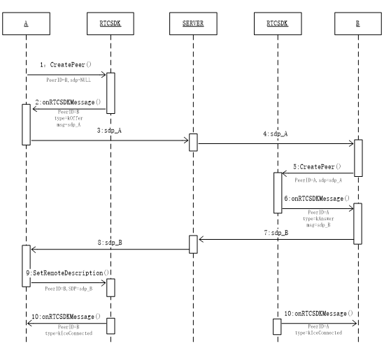

RTCSDK_pc-win ver0.1.0.9
2017-04-28
1.RTCSDK简介
RTCSDK提供一对一和多对多的音视频会话与数据发送接收功能。如图1所示，图1(a)中展示的是A与B两点之间的音视频会话，图1(b)中展示的是A、B和C三点的音视频会话。
图1.RTCSDK的音视频会话功能
RTCSDK以动态库和头文件的形式提供，目录结构如下：
RTCSDK
| -- Debug
| | -- RTCSDKd.dll
| | -- RTCSDKd.exp
| | -- RTCSDKd.ilk
| | -- RTCSDKd.lib
| \ -- RTCSDKd.pdb
| -- Release
| | -- RTCSDK.dll
| | -- RTCSDK.exp
| | -- RTCSDK.lib
| \ -- RTCSDK.pdb
\ -- RTCSDK.h
2.RTCSDK音视频会话的建立
2.1 两点
A与B两点之间音视频会话的建立如图2所示。其中A是主叫，B是被叫。
图2.两点音视频会话的建立 
步骤：</br> 1.主叫A调用RTCSDK接口CreatePeer，传入参数RTCParam，其中参 数peer_id为被叫B的ID，参数sdp为nullptr。（参数详见3.2节）</br> 2.RTCSDK回调接口onRTCSDKMessage，其中peer_id为被叫B的ID, 消息类型type为kOffer，消息msg为生成的sdp。</br> 3.4. 将sdp传递至被叫B。</br> 5.被叫B调用RTCSDK接口CreatePeer，传入参数RTCParam，其中参数peer_id为主叫A的ID，参数sdp为A生成的sdp。</br> 6.RTCSDK回调接口onRTCSDKMessage，其中peer_id为被叫A的ID，消息类型typ为kAnswer，消息msg为生成的sdp。</br> 7.8. 将sdp传递至主叫A。</br>
- 主叫A调用RTCSDK接口SetRemoteDescription，其中参数peer_id为被叫B的ID，参数sdp为B生成的sdp。</br>
- 音视频连通，主叫和被叫的RTCSDK会通过接口onRTCSDKMessage回调kIceConnected。</br>
2.2 多点
多点音视频会话的建立与两点类似。以三点的音视频会话为例，如图1(b)所示，C在A与B已经建立完成音视频会话的基础上，再分别与A和B进行两点间的音视频会话的建立。3.RTCSDK接口
3.1 创建与销毁RTCSDK
3.1.1 创建
void createRTCSDK(RTCSDK*& p)3.1.2 销毁
void destroyRTCSDK(RTCSDK*& p)3.2 RTCSDK参数
struct RTCParam{ char ice_server; // STUN服务器地址 char ice_port; // STUN服务器端口 char ice_user; // STUN服务器用户名 char ice_pwd; // STUN服务器密码 RTCCallBack call_back; // RTCSDK回调 char peer_id; // 会话对方的ID char* sdp; // sdp bool audio_on; // 是否打开音频 bool video_on; // 是否打开视频 HWND local; // 本地视频窗口句柄 HWND remote; // 对方视频窗口句柄 int max_bitrate; // 视频最大码率 int start_bitrate; // 视频起始码率 bool data_on; // 是否打开数据通道 bool ordered; // 数据包是否按顺序发送 int max_retransmit_time; // 数据包最大重传时间 int max_retransmits; // 数据包最大重传次数 };3.2.1 sdp
主叫端在进行CreatePeer时，该指针应该为nullptr。被叫端在进行CreatePeer时，该指针应该指向主叫端生成的sdp。3.2.2 max_retransmit_time与max_retransmits
max_retransmit_time与max_retransmits至少有一个参数值为-1，否则RTCSDK将max_retransmit_time设为-1。3.3 RTCSDK接口
class RTCSDK { public: virtual void CreatePeer(const RTCParam param) = 0; virtual void SetRemoteDescription
virtual void DestroyPeer(const char* peer_id = nullptr) = 0; virtual bool SendData(const char* peer_id, const char* sdp) = 0;
virtual void TurnVideoOff() = 0; virtual void EnableVideoSource(bool is_enable) = 0; virtual void EnableMicPhone(bool is_enable) = 0; };(const char* peer_id, unsigned char *data, size_t size) = 0;3.3.1 CreatePeer与SetRemoteDescription
详见2.1节。3.3.2 DestroyPeer
不传参数，释放所有资源。 传入peer_id，释放与该peer_id相关的资源。当只有一个peer_id时，释放所有资源。3.3.3 SendData
发送数据。其中peer_id为对端的id；data为要发送的数据；size为发送数据的大小。3.3.4 TurnVideoOff
在多人音视频中，将视频会话转换为音频会话，此过程不可逆。3.3.5 EnableVideoSource
打开关闭本地视频的显示与发送，此过程可逆。3.3.6 EnableMicPhone
打开关闭话筒。3.4 回调接口
class RTCCallBack { public: virtual void onRTCSDKMessage
};(const char* peer_id, const int type, const char* msg, const int data_size) = 0;3.4.1 peer_id
对方的id。3.4.2 type
回调类型，详见3.5节3.4.3 msg
回调数据，当type为kOffer时，msg为主叫生成的sdp；当type为kAnswer时，msg为被叫生成的sdp；当type为kData时，msg为接收到的数据。3.4.4 data_size
仅当type为kData时，data_size为接收到数据的大小，单位为字节，其余情况下为-1。3.5 回调状态
enum RTCSDKMsgType{ kOffer = 101, // 主叫回调sdp kAnswer = 102, // 被叫回调sdp kIceConnected = 103, // 连接成功 kIceDisconnected = 104, // 连接断开 kIceConnectionFailed = 105, // 连接失败 kData = 107, // 接收到数据 kNoCamera = 201 // 没有摄像头 };